27-DARS. MS ACCESS 2010 DA JADVALLARNI O’ZARO BOG’LASH
MS Access 2010 da MOBT jadvallarni bir-biri bilan bog‘lash katta ahamiyatga ega hisoblanadi. Chunki, MOBT bir nechta jadvallar hosil qilish va ulardagi kerakli ma’lumotlarni bir joyga jamlashda foydalaniladi. MS Access 2010 da jadvallarni bog‘lash uchun Работа с базами данных menyusining Схема данных bo‘limidan amalga oshiriladi. Jadvallarni bog‘lash va ushbu jadvallarni so‘rovlar yordamida bitta jadvalga birlashtirish uchun Создание menyusining Конструктор запросов bo‘limidan amalga oshiriladi.
1-mashq. Turli ma’lumotlarga ega bo‘lgan uchta jadvallarni bog‘lash masalasini ko‘rib o‘tamiz.
Bajarish:
• Создание menyusining Конструктор таблиц bandidan uchta jadval hosil qilamiz va jadvallarni “1-jadval”, “2-jadval”, “3-jadval” nomi bilan saqlaymiz. So‘ngra Работа с базами данных menyusining Схема данных bo‘limini tanlab, Добавление таблицы oynasini hosil qilinib, undan har bir jadvalni belgilab, Добавить tugmasi tanlanadi;
• hosil bo‘lgan jadvallarni o‘zaro bog‘lash uchun menyuda Изменить связи bo‘limi tanlanadi. Natijada quyidagi oyna hosil bo‘ladi:
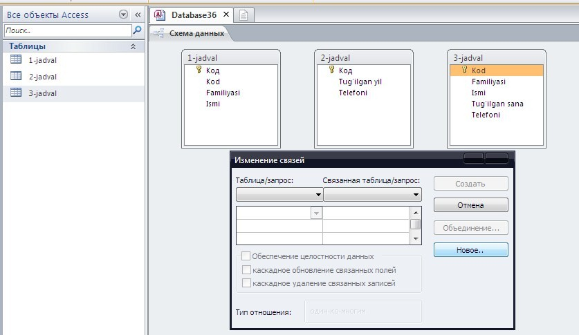
• oynadan Новое tugmasi tanlanib, Создание nomli yangi oyna hosil qilinadi. Oynaning Левая таблица qatoridan “1-jadval”ni, Правая таблица qatoriga “3-jadval”ni tanlaymiz. Левый столбец va Правый столбец qatoriga “Kod” tanlanib, OK tugmasi tanlanadi;
• Изменение связей oynasidan “1-jadval”ning birinchi qatoriga “Kod”, ikkinchi qatoriga “Familiyasi”, uchunchi qatoriga “Ismi” tanlanib Создать tugmasi tanlanadi;
Ushbu bajarilgan ketma-ketlikni “1-jadval” va “3-jadval” lar uchun ham bajariladi. Natijada quyidagi oyna hosil bo‘ladi:
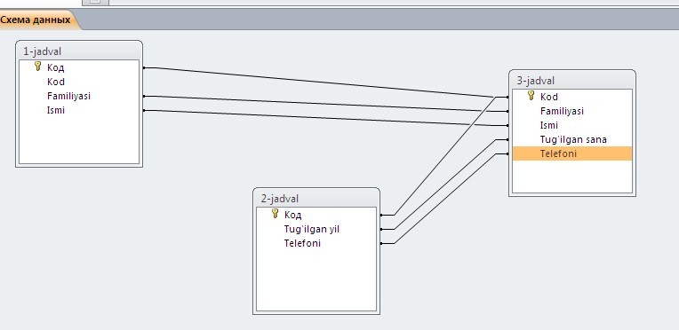
2-mashq. O‘quvchilar haqidagi ma’lumotlarni uchta jadvalga hosil qilish va ularni so‘rovlar yordamida bitta jadvalga birlashtirish.
Bajarish:
• birinchi jadvalga o‘quvchilarning familiyasi, ismi, otasining ismi haqida ma’lumotlar kiritiladi;
• ikkinchi jadvalga o‘quvchilarning yashash manzili, telefon raqami, sinfi haqida ma’lumotlar kiritiladi;
• uchinchi jadvalga informatika, matematika va fizika fanidan olgan baholari haqida ma’lumotlar kiritiladi;
• birinchi jadvalni hosil qilish uchun MS Access 2010 dasturini ishga tushiramiz va Создание menyusidan Конструктор таблиц bo‘limi tanlanadi. Hosil bo‘lgan jadvalni quyidagi tartibda to‘ldiramiz:
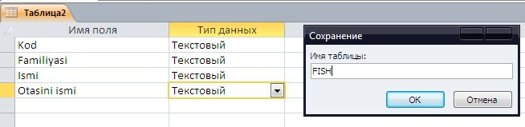
• yaratilgan jadvalni “FISH” nomi bilan saqlaymiz;
• Ikkinchi jadvalni hosil qilish uchun Создание menyusidan Конструктор таблиц bo‘limi tanlanadi. Hosil bo‘lgan jadvalni quyidagi tartibda to‘ldiramiz:
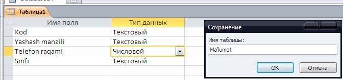
• jadvalni “Ma’lumot” nomi bilan saqlaymiz;
• uchinchi jadvalni hosil qilish tartibi ham yuqoridagi ketma-ketlikda amalga oshiriladi va hosil bo‘lgan jadvalni quyidagi tartibda to‘ldiramiz:
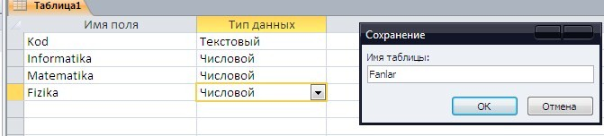
• yaratilgan jadvalni “Fanlar” nomi bilan saqlaymiz hamda jadvallarni quyidagi tartibda ma’lumotlar bilan to‘ldiramiz:
a)
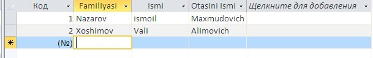
b)
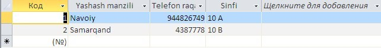
c)
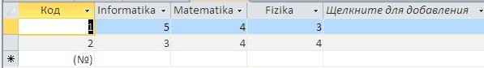
• jadvallar ma’lumotglar bilan to‘ldirigandan so‘ng, Создание menyusidan Конструктор запросов bo‘limi tanlanadi va quyidagi ketmaketlik bajariladi:
a) “FISH” bo‘limi tanlanib, Добавить tugmasi tanlanadi.
b) “Malumot” bo‘limi tanlanib, Добавить tugmasi tanlanadi.
c) “Fanlar” bo‘limi tanlanib, Добавить tugmasi tanlanadi va Закрыть tugmasi orqali chiqiladi.
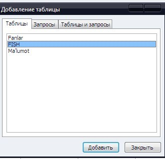
• hosil bo‘lgan uchta forma quyidagi tartibda bog‘laymiz (sichqoncha tugmasini bosgan holda surib tortiladi):
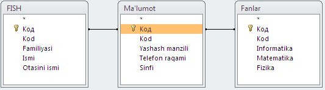
• uchta jadvaldagi tegishli maydon va shartlarni tanlaymiz. Buning uchun Поле bo‘limining birinchi ustuniga sichqoncha ko‘rsatkichi keltirilib chap tugmasi bosilsa, quyidagi ko‘rinish hosil bo‘ladi:
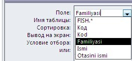
• hosil bo‘lgan jadvalga quyidagi tartibda ma’lumotlar joiylashtiriladi:
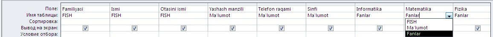
• menyudan Выполнить buyrug‘i tanlanadi. Natijada quyidagi oyna hosil bo‘ladi:
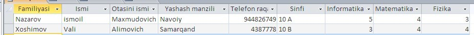
Jadvalga e’tibor qaratadigan bo‘lsak, uchta jadvaldagi ma’lumotlar so‘rovlar orqali bitta jadvalga birlashtirildi.

1. MS Access 2010 da jadvallar hosil qilishning necha xil usulini bilasiz?
2. MS Access 2010 da jadvallarni bog‘lash usullarini tushuntirib bering?
3. MS Access 2010 da so‘rovlar yordamida hosil qilingan jadvaldagi ma’lumotlarni o‘zgartirish mumkinmi?
4. O‘quvchilar haqidagi ma’lumotlarni uchta jadvalda hosil qiling va ularni so‘rov yordamida bitta jadvalga birlashtirish.

1. Turli ma’lumotlarga ega bo‘lgan to‘rtta jadvalni Схема данных bo‘limi orqali bog‘lang.
2. O‘quvchilar haqidagi ma’lumotlarni to‘rtta jadvalda hosil qiling va ularni so‘rov yordamida bitta jadvalga birlashtiring.